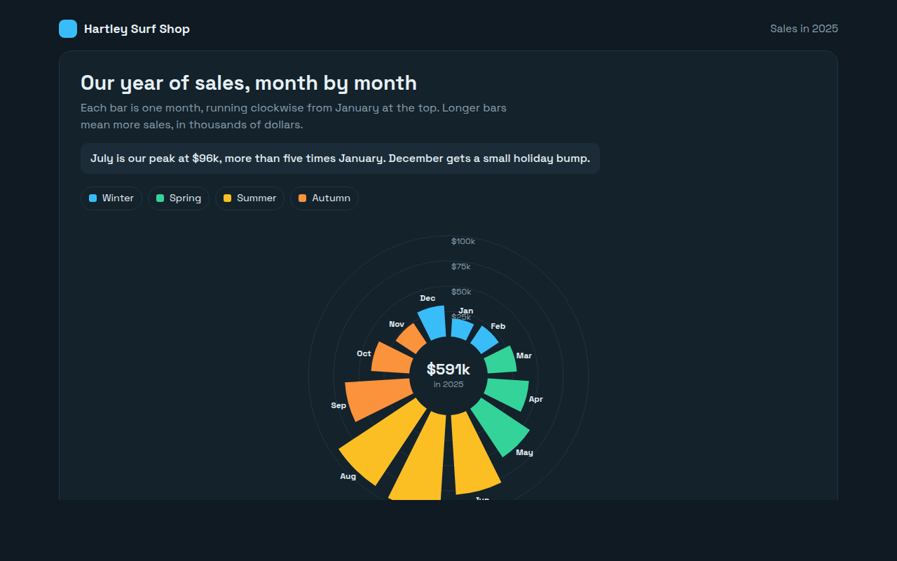
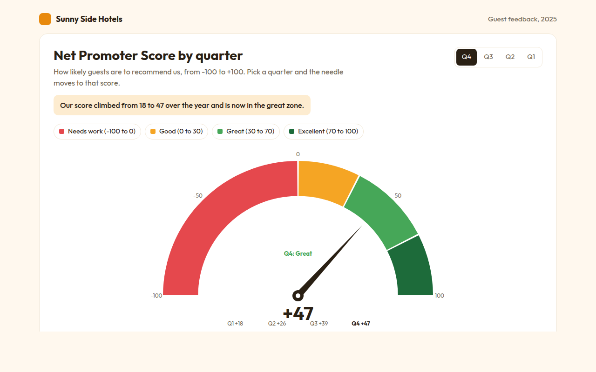
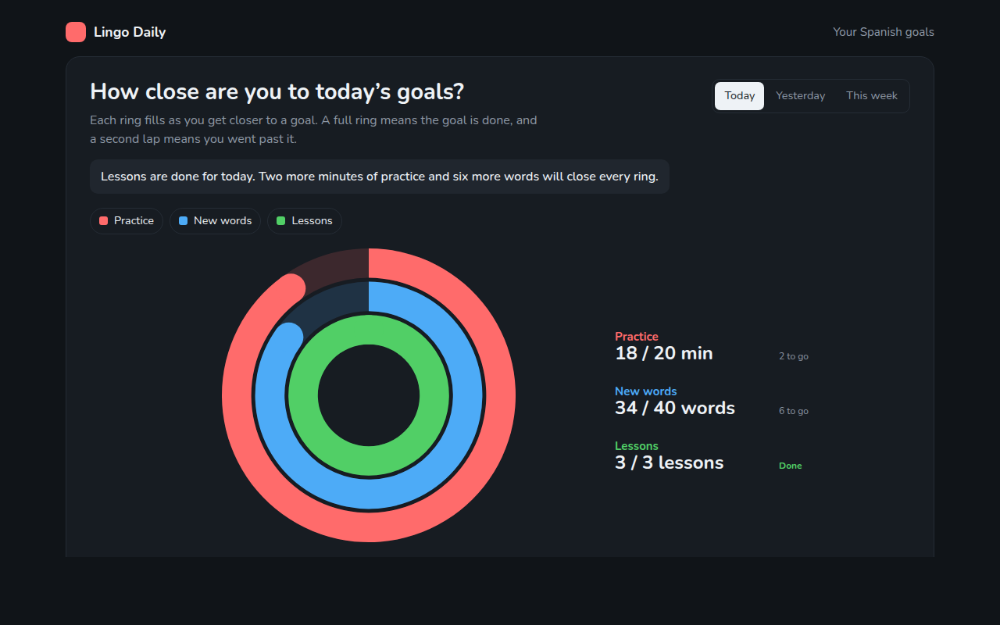
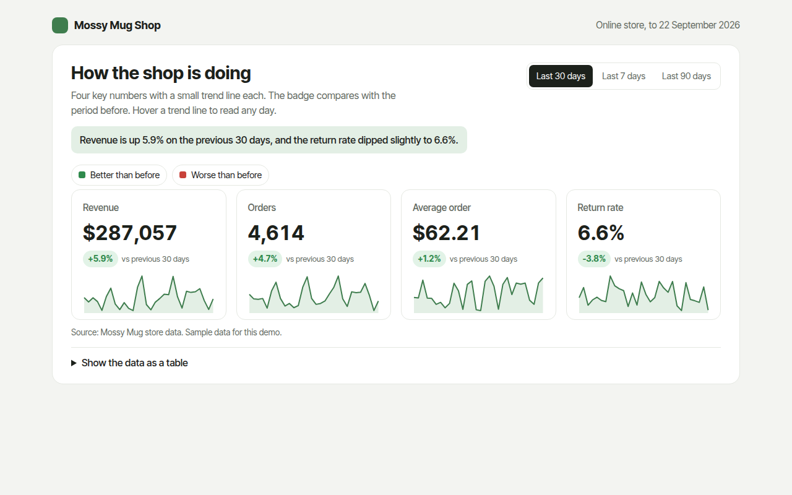
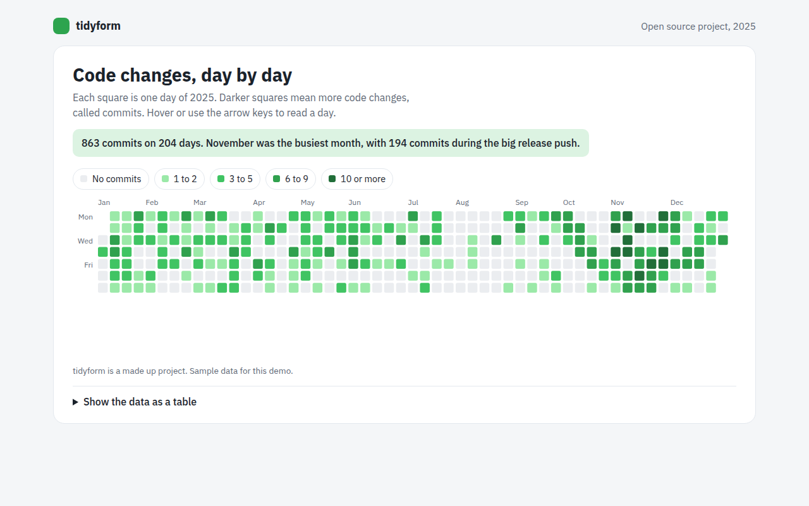
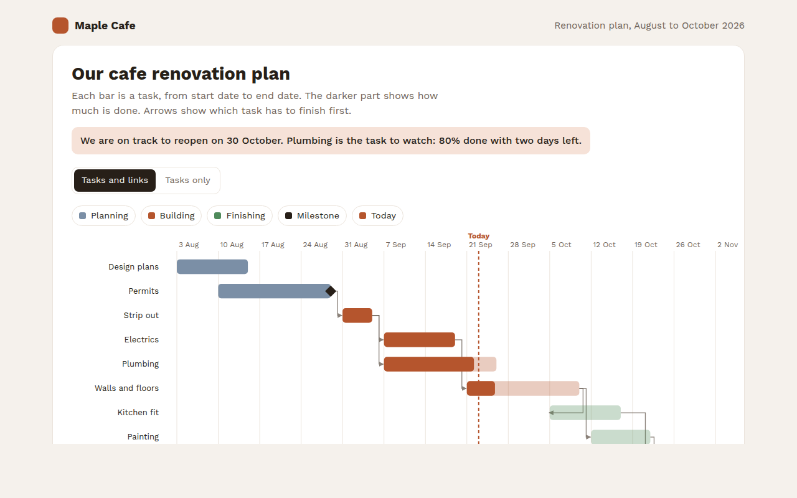
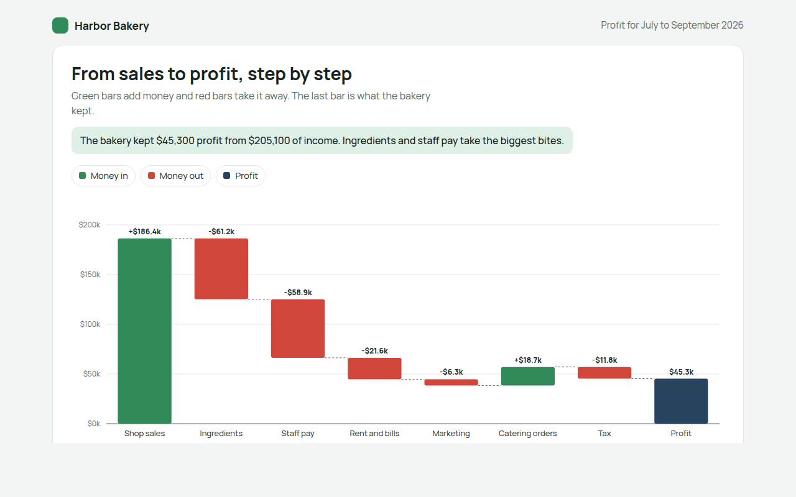
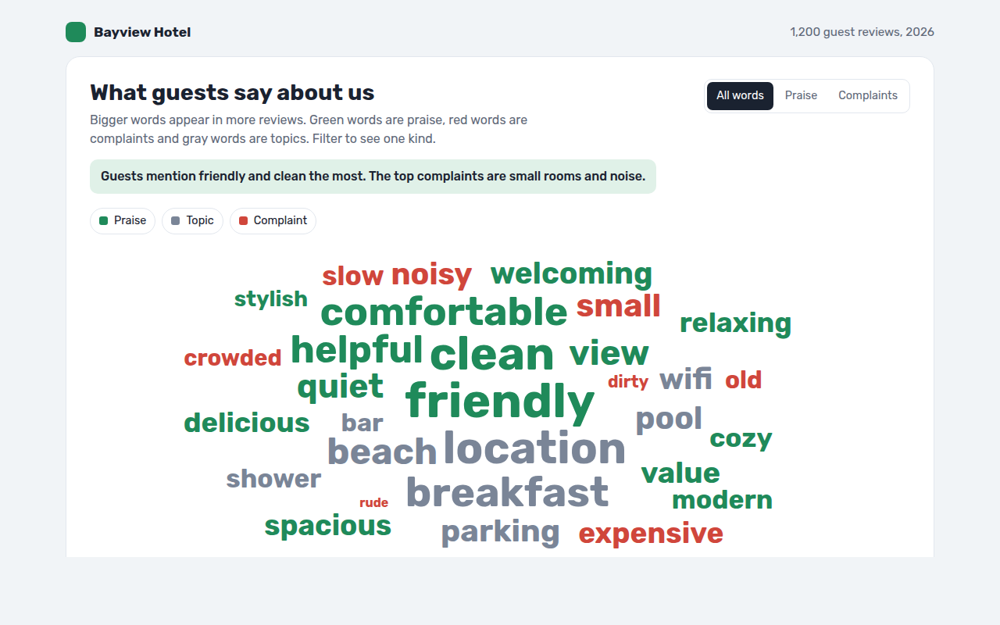
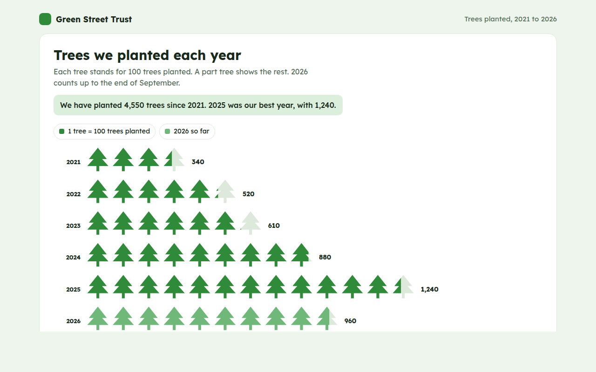
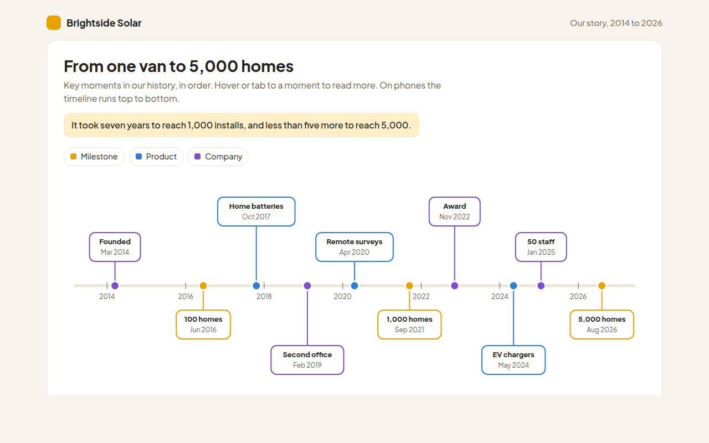

Home / Dashboard Widgets / Radial Bar Chart
Radial Bar Chart in HTML, CSS and JavaScript
A radial bar chart puts bars in a circle instead of a row. This free template draws one with plain SVG and vanilla JavaScript, no chart library. The example shows monthly sales for a surf shop.

What is a radial bar chart?
A radial bar chart puts bars in a circle instead of a row. Each bar grows outward from the middle, and the whole set goes around like a clock.
It suits data that repeats in a cycle, like months of the year or hours of the day, because December sits right next to January again. The shape of a busy season jumps out at once.
At a glance
- Best for
- Values that follow a cycle, like months or hours
- Data you need
- A value for each step of the cycle
- Skip it when
- Exact comparisons. Outer bars look bigger than they are.
- Made with
- HTML, CSS and vanilla JavaScript. No library.
When to use a radial bar chart
- Sales or visitors by month
- Traffic or calls by hour of day
- Rainfall or temperature through the year
- Eye catching summaries for reports
When to pick another chart
- Bar Chart: you need exact comparisons
- Radar Chart: you compare several items across the same measures
What you get in this template
- Twelve bars drawn as SVG arc shapes around a circle
- Bars colored by season
- Rings for $25k steps with labels
- The yearly total in the middle
- Bars grow outward one after another on load
- Tooltips with each month and its share of the year
How the code works
Here is a short version of the idea behind this radial bar chart. The full file adds the axis, labels, tooltips, sorting and resizing on top of it.
const sales = [18, 21, 29, 41, 58, 79, 96, 92, 64, 38, 24, 31];
const cx = 200, cy = 180, inner = 40;
const pt = (r, a) => (cx + r * Math.sin(a)) + ',' + (cy - r * Math.cos(a));
const step = Math.PI * 2 / 12;
sales.forEach((v, i) => {
const a0 = i * step + 0.03, a1 = (i + 1) * step - 0.03, outer = inner + v * 1.3;
make('path', { fill: '#fbbf24', d: 'M' + pt(outer, a0) + 'A' + outer + ',' + outer + ' 0 0 1 ' + pt(outer, a1) + 'L' + pt(inner, a1) + 'A' + inner + ',' + inner + ' 0 0 0 ' + pt(inner, a0) + 'Z' });
});The example uses four tiny helpers that create SVG shapes. Put them above the code and it runs as is.
const svg = document.querySelector('svg');
function make(tag, attrs) {
const n = document.createElementNS('http://www.w3.org/2000/svg', tag);
for (const k in attrs) n.setAttribute(k, attrs[k]);
svg.appendChild(n);
return n;
}
function drawRect(x, y, width, height, fill) { return make('rect', { x, y, width, height, fill }); }
function drawCircle(cx, cy, r, fill) { return make('circle', { cx, cy, r, fill }); }
function drawLine(x1, y1, x2, y2, stroke, width, dash) {
return make('line', { x1, y1, x2, y2, stroke, 'stroke-width': width || 1, 'stroke-dasharray': dash || 'none' });
}
function drawText(x, y, str, anchor) {
const t = make('text', { x, y, 'text-anchor': anchor || 'start' });
t.textContent = str;
return t;
}How to add it to your website
- Download the file. Click Download HTML file above. You get one file called radial-bar-chart.html with everything inside.
- Change the data. Open the file in any code editor and find the DATA list near the bottom. Replace the names and numbers with your own.
- Change the colors and text. Colors are at the top of the style tag. The title, subtitle and main point are plain HTML near the top of the body.
- Put it online. Upload the file to any host, such as GitHub Pages, Netlify or your own server, or paste it into your site. There is no build step.
Questions people ask
What is a radial bar chart?
A radial bar chart is a bar chart wrapped into a circle, with each bar growing outward from the center.
When should I use a radial bar chart?
For values that follow a cycle, like months or hours, where the end joins back to the start. It also makes a striking summary graphic.
What are the downsides of a radial bar chart?
Bars on the outside cover more area than bars near the middle, so differences can look bigger than they are. Use a normal bar chart when precision matters.
What is the difference between a radial bar chart and a pie chart?
In a pie chart the angle of each slice shows its share. In a radial bar chart every bar has the same angle and the length shows the value.
More dashboard widgets

061. Gauge Chart
Example: a hotel Net Promoter Score by quarter
062. Progress Ring Chart
Example: daily goals in a language learning app
063. KPI Cards with Sparklines
Example: revenue, orders, average order and returns for an online shop
064. Calendar Heatmap
Example: a year of code changes on an open source project
065. Gantt Chart
Example: a cafe renovation plan with tasks and milestones
066. Waterfall Chart
Example: how a bakery turns sales into profit
067. Word Cloud
Example: words guests use in hotel reviews
068. Pictogram Chart
Example: trees planted by a charity each year